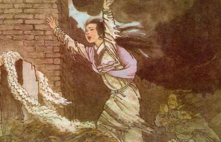

不同时期的故事版本：孟姜女有没有哭过长城？
“孟姜女哭长城”的爱情故事一直在民间广为流传“孟姜女哭长城”的爱情故事一直在民间广为流传千百年来，“孟姜女哭长城”的爱情故事一直在民间广为流传。有人认为孟姜女哭的是齐长城，有人认为孟姜女哭的是秦长城，还有人认为孟姜女从来没有哭过长城，甚至有人认为孟姜女压根就没有哭过。那么，真相到底如何呢？
孟姜女哭长城”在不同时期的记载
春秋战国时期
最先记载“孟姜女哭长城”的是春秋末年鲁国史官左丘明所著的《左传》。
公元前550年，齐庄公派大将杞梁、华周攻打莒国。杞梁、华周与莒国国君在蒲侯氏相遇，莒国国君想策反二人，便用重金贿赂他们并请求结盟。杞梁、华周表示：“贪图私利，违抗君令，这是君主所不齿的！早晨接受命令，中午便弃之不顾，今后又有何颜面侍奉君主呢？”于是，二人与莒人大战于蒲侯氏。莒国国君亲自击鼓迎战齐军，结果，齐军战败，杞梁被杀。齐庄公被迫与莒国讲和，然后撤军而归。